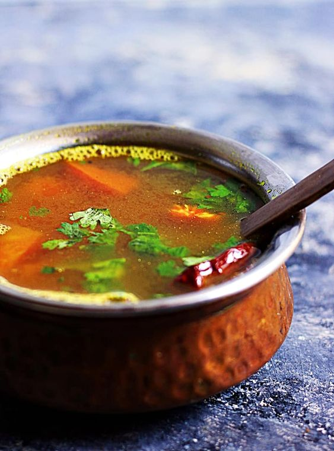

rasam

Description
Rasam is a flavorful South Indian soup, typically made with tamarind juice, tomatoes, and a blend of spices. It can be enjoyed as a soup or served with rice. Here is a simple recipe to prepare rasam at home:
Ingredients
- 1 medium-sized tomato, chopped
- 1 small lemon-sized ball of tamarind or 1 tablespoon tamarind paste
- 2 cups water (for tamarind extract)
- 1 teaspoon rasam powder (store-bought or homemade)
- 1 medium tomato, chopped
- 2 green chilies, slit
- 1/2 teaspoon black pepper powder
- 1/2 teaspoon cumin powder
- A handful of fresh coriander leaves, chopped
Steps
- If using tamarind, soak a small lemon-sized ball of tamarind in 2 cups of warm water for about 10-15 minutes.
- Squeeze and extract the juice, discarding the pulp.
- If using tamarind paste, dissolve 1 tablespoon of paste in 2 cups of warm water.
- Add 1/2 teaspoon of turmeric powder, 1/4 teaspoon of asafoetida, 1/2 teaspoon of black pepper powder, and 1/2 teaspoon of cumin powder.
- Bring the mixture to a boil and cook until the tomatoes are soft and mushy.
- Once the tomatoes are cooked, add 1 teaspoon of rasam powder to the pot.
- Add 1 teaspoon of cumin seeds, a pinch of asafoetida, 8-10 curry leaves, and 2 dried red chilies.
- Serve hot, either as a soup or with steamed rice.